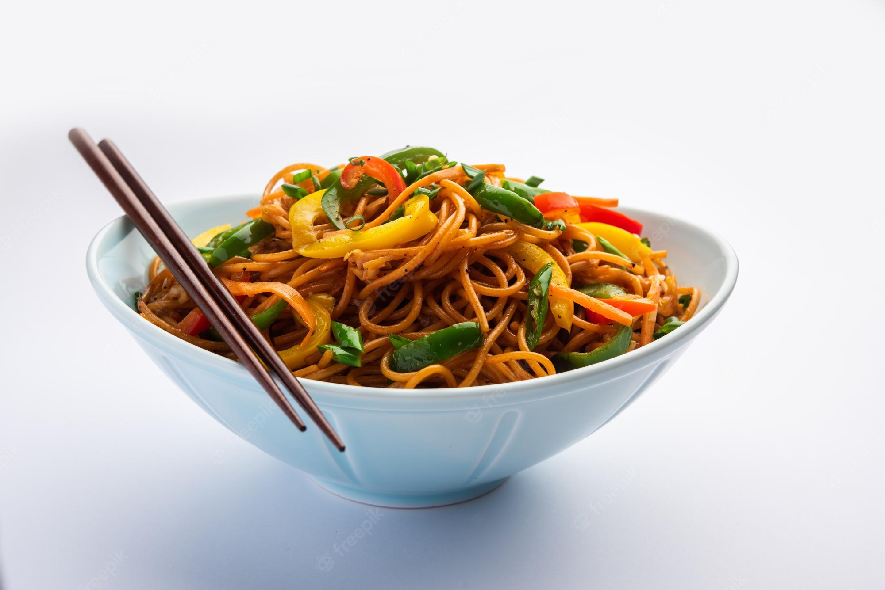

Noodles

pulled pork recipe
Whether you're making it in the slow cooker, oven, or smoker, we've got dozens of top-rated recipes for pulled pork.
Needed for making this include:
- Cinnamon
- Flour
- Beef
- Bread
- Salt
- Wheat
- Rice
- Buckwheat
- Starches derived from Potato
- Sweet Potato
- Water
Steps for making Noodles
- boil beef for 25 minutes
- dice the bread
- fry the beef
- boil beef for 25 minutes
- boil beef for 25 minutes
- Gather the Noodle Ingredients
- To make the homemade noodle dough, grab your flour, salt, eggs, oil, and water. ...
- Mix the Dough. In a large mixing bowl
- Stir together flour and the salt. ....
- Knead the Dough. ...
- Roll the Dough. ...
- Cut the Noodles. ...
Return to main page